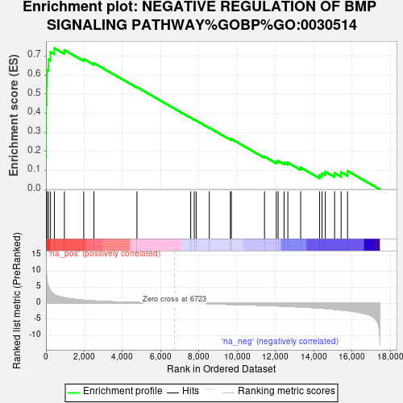
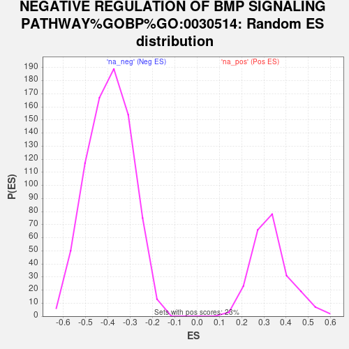

| Dataset | gene_ranks |
| Phenotype | NoPhenotypeAvailable |
| Upregulated in class | na_pos |
| GeneSet | NEGATIVE REGULATION OF BMP SIGNALING PATHWAY%GOBP%GO:0030514 |
| Enrichment Score (ES) | 0.7406409 |
| Normalized Enrichment Score (NES) | 2.2414136 |
| Nominal p-value | 0.0 |
| FDR q-value | 4.2042354E-4 |
| FWER p-Value | 0.004 |

| SYMBOL | RANK IN GENE LIST | RANK METRIC SCORE | RUNNING ES | CORE ENRICHMENT | |
|---|---|---|---|---|---|
| 1 | SMAD6 | 0 | 14.930 | 0.1727 | Yes |
| 2 | NOG | 9 | 12.570 | 0.3176 | Yes |
| 3 | BAMBI | 12 | 11.033 | 0.4451 | Yes |
| 4 | SMAD7 | 34 | 8.656 | 0.5440 | Yes |
| 5 | SKIL | 54 | 7.299 | 0.6274 | Yes |
| 6 | NBL1 | 136 | 5.126 | 0.6820 | Yes |
| 7 | FBN1 | 239 | 3.858 | 0.7208 | Yes |
| 8 | LRP2 | 440 | 2.709 | 0.7406 | Yes |
| 9 | DLX1 | 965 | 1.744 | 0.7308 | No |
| 10 | LEMD3 | 1976 | 0.980 | 0.6842 | No |
| 11 | PPARG | 2509 | 0.769 | 0.6625 | No |
| 12 | CHRDL1 | 4758 | 0.258 | 0.5366 | No |
| 13 | SMURF2 | 7571 | -0.040 | 0.3757 | No |
| 14 | UBE2D3 | 7756 | -0.062 | 0.3659 | No |
| 15 | SKI | 7854 | -0.073 | 0.3612 | No |
| 16 | SORL1 | 8544 | -0.158 | 0.3235 | No |
| 17 | GREM1 | 9644 | -0.307 | 0.2640 | No |
| 18 | TRIM33 | 9695 | -0.315 | 0.2648 | No |
| 19 | UBE2D1 | 11429 | -0.613 | 0.1724 | No |
| 20 | FSTL3 | 12048 | -0.751 | 0.1457 | No |
| 21 | SKOR1 | 12142 | -0.773 | 0.1493 | No |
| 22 | NOTCH1 | 12454 | -0.850 | 0.1413 | No |
| 23 | GREM2 | 12649 | -0.907 | 0.1406 | No |
| 24 | SMURF1 | 13321 | -1.105 | 0.1149 | No |
| 25 | CRIM1 | 14312 | -1.425 | 0.0746 | No |
| 26 | CHRD | 14439 | -1.481 | 0.0845 | No |
| 27 | HIPK2 | 14610 | -1.568 | 0.0929 | No |
| 28 | MTMR4 | 15094 | -1.819 | 0.0862 | No |
| 29 | GPR155 | 15435 | -2.030 | 0.0902 | No |
| 30 | TMEM53 | 15771 | -2.244 | 0.0969 | No |
